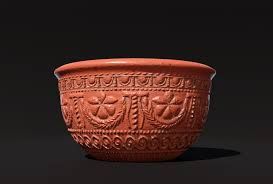

Ancient Pots

Greek Amphora
Tall, two-handled vessels used for storing and transporting liquids, wine and olive oil.

Roman Terra Sigillata
Red-gloss pottery popular in Roman Empire, known for smooth, shiny surface.

Chinese Han Dynasty Pottery
Earthenware and stoneware pots from Han Dynasty, decorated with intricate designs.


Pre-Columbian Pottery
Pottery from ancient civilizations in the Americas, such as the Maya and Inca.